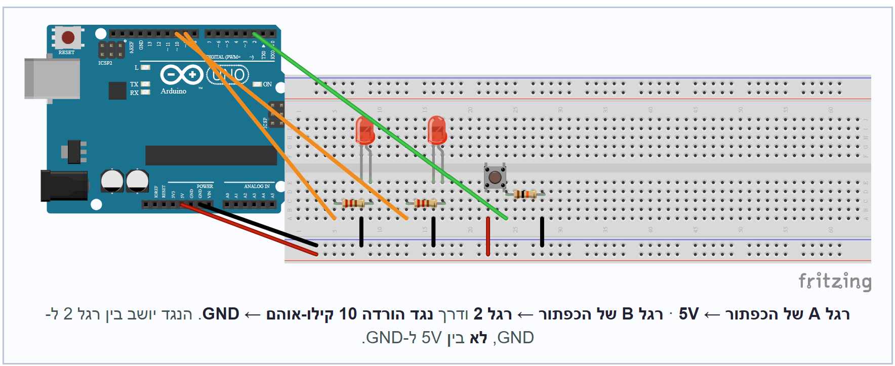

מוסיפים כפתור לחיצה ונגד הורדה.
נגד ההורדה של 10kΩ חייב להיות בין חיבור דיגיטלי 2 ל־GND — לא בין 5V ל־GND. אם שמים אותו בין 5V ל־GND, לחיצה על הכפתור יוצרת קצר ומאפסת את הארדואינו. עוקבים באצבע: מחיבור דיגיטלי 2 ל־GND? ✓

החריץ המרכזיבוחרים כפתור לחיצה ממגש החלקים. יש לו ארבע רגליים.
מכניסים את הכפתור לרוחב החריץ המרכזי, כך שהרגליים יתחברו לשני צידי החריץ. אם לא יושב נכון — מסובבים 90° ומנסים שוב.
בוחרים נגד של 10kΩ — פסים חום · שחור · כתום.
⚠️ זה לא אותו נגד כמו נגד ה-220Ω של הלדים.
מחברים צד אחד של הכפתור (רגל A) ל5V של הארדואינו.
מחברים את הצד השני (רגל B) לחיבור דיגיטלי 2.
מרגל B, מחברים גם דרך הנגד של 10kΩ לGND. (זהו נגד ההורדה — הוא מחזיק את חיבור דיגיטלי 2 על 0 וולט כשהכפתור לא לחוץ).
הכפתור מחובר לרוחב החריץ המרכזי. צד אחד ל-5V, הצד השני לחיבור דיגיטלי 2 וגם דרך הנגד של 10kΩ ל-GND. שני הלדים מקודם עדיין מחווטים.
עדיין לא קורה שום דבר חדש בלחיצה — הקוד הנוכחי לא יודע על הכפתור. שלב 8 משנה את זה.